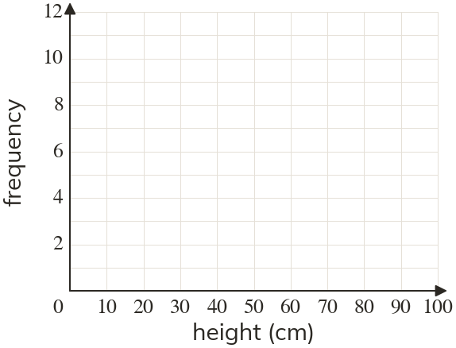

Westonbirt Maths · Representing Data
Frequency Polygons
Name: ______________________ Date: ____________
1
Plants' heights, in cm: : : : : :
Find each class's midpoint.
Find each class's midpoint.
2
Draw the frequency polygon on the axes.

3
Which class interval has the most plants?
4
Describe the shape of the polygon. What does it show?
5
Ken joins the points of his frequency polygon with a smooth curve and draws bars under them. What should he do instead?
Ext
A second group's polygon is low and roughly flat across every class. Compare the two groups.